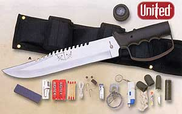

Featured Member Video
How To Use Various Fire StartersMore Videos by crashdive123
View larger or ask the author a question.
View all wilderness survival videos
Recent Forum Posts 
| Thread Title | Replies |
| Lost in the jungle at night | 7 |
| Chinese Fishing Lures on Ebay | 1 |
| So, how ‘bout that carona virus? | 310 |
| New washing machine!? | 6 |
| Hi | 2 |
| What are you cooking today and how? | 2283 |
| I'm Pretty Proud... | 28 |
| Pet hair | 31 |
| Hey everyone | 1 |
| Which skateboard should be the best... | 18 |
Come Join the Discussion Today!
Our site has been mentioned in:
U.S. News and World Report
Best of the Web - Site of the Week 8/6/01
Discovery Channel Canada
One Week in the Wilderness
USA Today
Hot Sites 08/08/2005
FIELD-EXPEDIENT DIRECTION FINDING

In a survival situation, you will be extremely fortunate if you happen to have a map and compass. If you do have these two pieces of equipment, you will most likely be able to move toward help. If you are not proficient in using a map and compass, you must take the steps to gain this skill.
There are several methods by which you can determine direction by using the sun and the stars. These methods, however, will give you only a general direction. You can come up with a more nearly true direction if you know the terrain of the territory or country.
You must learn all you can about the terrain of the country or territory to which you or your unit may be sent, especially any prominent features or landmarks. This knowledge of the terrain together with using the
methods explained below will let you come up with fairly true directions to help you navigate.
USING THE SUN AND SHADOWS
The earth's relationship to the sun can help you to determine direction on earth. The sun always rises in the east and sets in the west, but not exactly due east or due west. There is also some seasonal variation. In the northern hemisphere, the sun will be due south when at its highest point in the sky, or when an object casts no appreciable shadow. In the southern hemisphere, this same noonday sun will mark due north. In the northern hemisphere, shadows will move clockwise. Shadows will move counterclockwise in the southern hemisphere. With practice, you can use shadows to determine both direction and time of day. The shadow methods used for direction finding are the shadow-tip and watch methods.Shadow-Tip Methods
In the first shadow-tip method, find a straight stick 1 meter long, and a level spot free of brush on which the stick will cast a definite shadow. This method is simple and accurate and consists of four steps:
- Step 1. Place the stick or branch into the ground at a level spot where it will cast a distinctive shadow. Mark the shadow's tip with a stone, twig, or other means. This first shadow mark is always west--everywhere on earth.
- Step 2. Wait 10 to 15 minutes until the shadow tip moves a few centimeters. Mark the shadow tip's new position in the same way as the first.
- Step 3. Draw a straight line through the two marks to obtain an approximate east-west line.
- Step 4. Stand with the first mark (west) to your left and the second mark to your right--you are now facing north. This fact is true everywhere on earth.
An alternate method is more accurate but requires more time. Set up your shadow stick and mark the first shadow in the morning. Use a piece of string to draw a clean arc through this mark and around the stick. At midday, the shadow will shrink and disappear. In the afternoon, it will lengthen again and at the point where it touches the arc, make a second mark. Draw a line through the two marks to get an accurate east-west line (see Figure 18-1).

The Watch Method
You can also determine direction using a common or analog watch--one that has hands. The direction will be accurate if you are using true local time, without any changes for daylight savings time. Remember, the further you are from the equator, the more accurate this method will be. If you only have a digital watch, you can overcome this obstacle. Quickly draw a watch on a circle of paper with the correct time on it and use it to determine your direction at that time.
In the northern hemisphere, hold the watch horizontal and point the hour hand at the sun. Bisect the angle between the hour hand and the 12 o'clock mark to get the north-south line (Figure 18-2). If there is any doubt as to which end of the line is north, remember that the sun rises in the east, sets in the west, and is due south at noon. The sun is in the east before noon and in the west after noon.
Note: If your watch is set on daylight savings time, use the midway point between the hour hand and 1 o'clock to determine the north-south line.

In the southern hemisphere, point the watch's 12 o'clock mark toward the sun and a midpoint halfway between 12 and the hour hand will give you the north-south line (Figure 18-2).
USING THE MOON
Because the moon has no light of its own, we can only see it when it reflects the sun's light. As it orbits the earth on its 28-day circuit, the shape of the reflected light varies according to its position. We say there is a new moon or no moon when it is on the opposite side of the earth from the sun. Then, as it moves away from the earth's shadow, it begins to reflect light from its right side and waxes to become a full moon before waning, or losing shape, to appear as a sliver on the left side. You can use this information to identify direction.
If the moon rises before the sun has set, the illuminated side will be the west. If the moon rises after midnight, the illuminated side will be the east. This obvious discovery provides us with a rough east-west reference during the night.
USING THE STARS
Your location in the Northern or Southern Hemisphere determines which constellation you use to determine your north or south direction.
The Northern Sky
The main constellations to learn are the Ursa Major, also known as the Big Dipper or the Plow, and Cassiopeia (Figure 18-3). Neither of these constellations ever sets. They are always visible on a clear night. Use them to locate Polaris, also known as the polestar or the North Star. The North Star forms part of the Little Dipper handle and can be confused with the Big Dipper. Prevent confusion by using both the Big Dipper and Cassiopeia together. The Big Dipper and Cassiopeia are always directly opposite each. other and rotate counterclockwise around Polaris, with Polaris in the center. The Big Dipper is a seven star constellation in the shape of a dipper. The two stars forming the outer lip of this dipper are the "pointer stars" because they point to the North Star. Mentally draw a line from the outer bottom star to the outer top star of the Big Dipper's bucket. Extend this line about five times the distance between the pointer stars. You will find the North Star along this line.

Cassiopeia has five stars that form a shape like a "W" on its side. The North Star is straight out from Cassiopeia's center star.
After locating the North Star, locate the North Pole or true north by drawing an imaginary line directly to the earth.
The Southern Sky
Because there is no star bright enough to be easily recognized near the south celestial pole, a constellation known as the Southern Cross is used as a signpost to the South (Figure 18-4). The Southern Cross or Crux has five stars. Its four brightest stars form a cross that tilts to one side. The two stars that make up the cross's long axis are the pointer stars. To determine south, imagine a distance five times the distance between These stars and the point where this imaginary line ends is in the general direction of south. Look down to the horizon from this imaginary point and select a landmark to steer by. In a static survival situation, you can fix this location in daylight if you drive stakes in the ground at night to point the way.

MAKING IMPROVISED COMPASSES
You can construct improvised compasses using a piece of ferrous metal that can be needle shaped or a flat double-edged razor blade and a piece of nonmetallic string or long hair from which to suspend it. You can magnetize or polarize the metal by slowly stroking it in one direction on a piece of silk or carefully through your hair using deliberate strokes. You can also polarize metal by stroking it repeatedly at one end with a magnet. Always rub in one direction only. If you have a battery and some electric wire, you can polarize the metal electrically. The wire should be insulated. If not insulated, wrap the metal object in a single, thin strip of paper to prevent contact. The battery must be a minimum of 2 volts. Form a coil with the electric wire and touch its ends to the battery's terminals. Repeatedly insert one end of the metal object in and out of the coil. The needle will become an electromagnet. When suspended from a piece of nonmetallic string, or floated on a small piece of wood in water, it wil l align itself with a north-south line.
You can construct a more elaborate improvised compass using a sewing needle or thin metallic object, a nonmetallic container (for example, a plastic dip container), its lid with the center cut out and waterproofed, and the silver tip from a pen. To construct this compass, take an ordinary sewing needle and break in half. One half will form your direction pointer and the other will act as the pivot point. Push the portion used as the pivot point through the bottom center of your container; this portion should be flush on the bottom and not interfere with the lid. Attach the center of the other portion (the pointer) of the needle on the pen's silver tip using glue, tree sap, or melted plastic. Magnetize one end of the pointer and rest it on the pivot point.
OTHER MEANS OF DETERMINING DIRECTION
The old saying about using moss on a tree to indicate north is not accurate because moss grows completely around some trees. Actually, growth is more lush on the side of the tree facing the south in the Northern Hemisphere and vice versa in the Southern Hemisphere. If there are several felled trees around for comparison, look at the stumps. Growth is more vigorous on the side toward the equator and the tree growth rings will be more widely spaced. On the other hand, the tree growth rings will be closer together on the side toward the poles.
Wind direction may be helpful in some instances where there are prevailing directions and you know what they are.
Recognizing the differences between vegetation and moisture patterns on north- and south-facing slopes can aid in determining direction. In the northern hemisphere, north-facing slopes receive less sun than south-facing slopes and are therefore cooler and damper. In the summer, north-facing slopes retain patches of snow. In the winter, the trees and open areas on south-facing slopes are the first to lose their snow, and ground snowpack is shallower.
| Ultimate Survival Knife & Kit  |
List Price: 61.99 Our Price: 39.95 |
This 15 inch survival knife with drop point blade features a thick quality stainless steel blade with serrated top edge. Textured and ribbed solid metal handle and guard. Nylon sheath. Survival kit includes a hollow grip with a compass top to store items within the knife itself, as well as additional pouches on the sheath to hold the rest. Complete survival kit. Click Here to Buy the Survival Knife Now. |
|